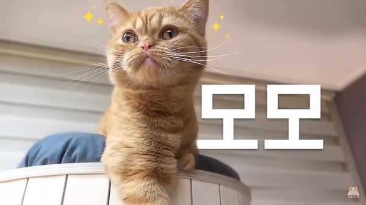

|  | |
| 이름 | 모모 |
|---|---|
| 출생 | 2016년 10월 29일 |
| 품종 | 페르시안 엑조틱 숏헤어 / 치즈 태비 |
| 눈 색 | 녹색 → 골드 |
| 성별 | 남아 |
| 몸무게 | 4.10kg (20.08.07) |
| 꼬리 길이 | 27cm |
| 별명 | 모모회장님, 모전하, 모니 스타크, 냥아치 2호 등 |
중성화된 수컷 치즈색 엑조틱 숏헤어. 본래 아깽이들을 패고 다녔지만, 17년도 후반부에 들어 아깽이들이 성장하고 본인도 성숙해져서인지 잘 건드리지 않는다. 말풍선색은 노란색. 18년 6월 10일 기준으로 몸무게 3.83kg.
스타워즈의 요다를 닮았다느니, 문재인 대통령을 닮았다느니, 이건희 회장을 닮았다느니, flat face[47]라느니, 얼굴 생김새에 대한 이야기가 많은 편. 애니메이션 슈렉에 등장하는 장화신은 고양이를 닮았단 언급도 많다. 크림 히어로즈의 다른 고양이들에 비해 아무래도 귀엽다기보다는 다소 심술맞아 보이거나 근엄한(?) 생김새에 가깝다보니 집사도 가끔씩 '회장님'이라고 부르기도 한다. 집사의 손에서 잘 빠져나가서 또 다른 별명으로 '모꾸라지'가 있다. 크림히어로즈 중에서는 유독 날렵하고 잘빠진 몸을 가지고 있는 데다 팔다리도 길쭉한 편이라 몇몇 시청자들이 농담삼아 섹시한 고양이라는 말을 하기도 했다.
물을 마실 때 한정 찍먹파다. 생방송을 보다보면 뒷다리 한쪽을 물통에 걸치고 앞 발바닥으로 물을 찍어 핥아 먹는 모습을 쉽게 관찰할 수 있다. 소파 밑을 아주 좋아한다. 마음에 드는 장난감이나 먹을 것이 있으면 물고 소파 밑으로 가져가는 것을 종종 볼 수 있다. 집사가 모모 발톱을 자를때 하도 말을 듣지 않아서 자꾸 그러면 수납장 사서 소파 밑에 넣어버린다고 할 정도.
위의 소개 영상을 봐도 알수 있듯이, 운동 신경이 좋고 엉뚱한 행동을 서슴치 않아 몸개그를 자주 하는 고양이 중 하나이기도 하다. 고양이 워터파크 편에서는 물 한가운데에 츄르가 담긴 그릇을 놓자 삐그덕삐그덕거리면서도 츄르를 먹고싶어하는 모습을 보여주기도 하고, 고장난 줄 알았다 소파 밑 지퍼를 열고 들어가 있었는데 눈치채지 못한 집사가 따라들어가려는 츄츄만 검거한 후, 갑자기 보이지 않는 모모를 걱정하며 찾아다닌 적도 있다. 뜬금없이 두발로 껑충껑충 뛰어다니기도 하고, 집사가 집 안에서 드론을 날리자 얼떨결에 냥냥펀치를 날려 바닥에 패대기 쳐놓고는 드론과 자기 손을 번갈아보기도 했다. 심지어 4월 9일자 영상 썸네일에선 아예 날고 계신다(...) 또 예전 집에선 문을 열 수 있었다!
신체능력, 특히 점프력은 단연 발군이라 거의 몸 길이만큼 높이 뛰어오를 수 있다. 모모가 체중이 더 가벼운 것을 감안해도 의외로 운동신경 좋은 동갑내기 코코보다도 점프력이 높다. 물론 집사와 장난 칠 때 쉴새없이 폴짝거리는 코코와 비교해서 몇번 뛰고 나서 헥헥거리는 것을 보면 지구력이 좋은 편은 아닌듯. 말 그대로 치타.
동갑내기인 코코하고는 사이가 굉장히 좋아 같이 있으면 자연스럽게 그루밍을 주고받는다. 둘이 같이 있으면 주로 모모 쪽에서 치댄다. 코코와 다르게 겁이 많아서 코코보다 점프력은 더 높음에도 불구하고 코코는 쉽게 오르는 캣타워의 꼭대기 층에 오르지 못하는 모습을 보였다. 또한 중성화 수술을 위해 차에 타고 병원에 갈때, 동행했던 코코, 루루, 츄츄와는 달리 차를 타 본 경험이 없어서 몹시 불안해하다가 참다 못해 케이지를 빠져나와 코코가 있는 케이지 안으로 들어갔다고 한다. 모모는 정말 코코가 없으면 안되는 고양이인 것 같다고. 4월 4일자 영상에선 분명 이불에 따로 들어갔는데 같이 붙어있기도 했다. 이를 본 집사의 "너넨 여기서도 같이 있고 싶어?"라는 반응은 덤.
물론 스크래치가 생길 정도로 거칠게 노는 경우도 많다고 한다. 생방송에서 종종 서로 때리고 있거나 덮치고 있는 두 고양이를 볼 수 있다. 집사에 따르면 근육량 같은 전반적인 신체능력은 코코보다 좀 더 좋은 것 같은데 둘이 장난칠때 보면 승률이 묘하게 비슷비슷한 정도라고 한다.
근엄해 보이는 외모와는 달리 성격은 전형적인 똥꼬발랄(?)한 냥아치 그 자체로 철이 들면서 많이 얌전해진 또래친구 코코와 달리 (모모도 옛날에 비하면 많이 얌전해지긴 했지만) 성묘가 된 이후에도 어느정도는 어린 시절의 활달한 성격을 그대로 가지고 있다. 2019년 이후에는 유독 집사의 등을 자주 탄다고 한다. 심지어 생방송에서도 집사의 등을 타고 올라가서 앉아있는 모습을 보일 정도.
거칠고 공격적인 성향에 코코와 비슷하게 식탐이 많아, 츄르를 먹을 때는 매우 저돌적으로 달려들고, 분리해놓은 달걀 노른자를 물고 도망가기도 하고, 먹다 남은 닭다리를 카펫까지 질질 끌고 가 혼자 뜯어 먹다가 이를 뺏으려는 집사에게 으르렁대기도 한다. 결국 돌아온 것은 '사랑의 맴매' 아무래도 밥그릇 경쟁이라는 것을 알아 여기에 민감한 것인지, 집사가 가끔 1:1 츄르 타임을 가질 때면 평소와는 달리 발톱도 세우지 않고 얌전하게 먹는다. 그리고 모모가 어느 정도 성숙했고 저 사랑의 맴매가 계기가 되었는지 요즘은 음식이 바로 눈 앞에 있어도 잘 기다리는 편이다. 단체츄르타임은 예외... 17년 봄에는 완성된 요리 주변에서 알짱거리던 고양이 중 제일 얌전하게 기다리는 모습을 보여 집사가 가장 마지막까지 식탁 위에 남겨놓기도 했다.크으 황태 해장국을 요리한 영상에서는 요리가 맘에 들지 않았는지 집사를 원망스런 눈으로 쳐다보다가 자리를 떴다.[48]
겉 인상과는 달리 속정이 많아, 밥을 먹다가도 집사가 외출을 하려고 하면 따라 나와서 야옹거리는 다정한 모습을 보인다고 한다. 평소에 집사를 마중나와 야옹거리는 고양이들은 티티, 모모, 라라라고 한다. 그중에서도 유독 모모가 제일 먼저 운다고. 집사도 모모를 돌봐주는 시간이 되면 평소의 다정한 성격에 대해 종종 언급하지만 영상을 접한지 얼마 안된 시청자들은 츄르 시간 등에서의 거친 행동을 기억하는 경우가 많다. 크림미식회에서 집사의 요리를 가장 많이 선택하는 고양이. 1:5나 1:6으로 몰린 상황에서도 거의 항상 영패를 막아준다.
전투력도 높고 신체 능력이 좋은데도 겁이 많고 의외로 여린 성격 때문에 다른 고양이들에게 밀리는 모습을 종종 보여준다. 17년 8월 7일 방송에서 모모가 자기보다 어린 라라에게 냥냥펀치를 맞고 울며 도망갔다고 한다. 하지만 루루는 확실히 제압한 적이 있는 걸로 봐서는 어느 정도 봐주고 있을 가능성도 있다. 이와 별개로 집사가 한 때는 모모를 라라와 이어주려는 생각도 했었다고 한다. 지금으로도 만족하고 모모가 중성화 수술을 했기 때문에 없는 일이 되었지만. 우연인지 19년도 후반 들어 묘하게 라라에게 집착하는 모습을 보이고 있다. 아예 라라를 "임자"라고 부르며 따라다니는 기믹이 생겼을 정도인데, 라라는 디디를 더 좋아하고 모모만 보면 냥냥펀치를 날린다.